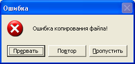

PChar
Это тоже строка, и в будущем нам придется с ней сталкиваться.
Эта строка работает совершенно иначе, чем String.
Строка String представляет собой массив символов, в нулевом элементе которого содержится количество байт, отводимых под эту строку.
А переменная типа PChar – это не сама строка, а указатель на начало строки, то есть переменная указывает на первый символ строки в памяти компьютера.
А где же тогда PChar хранит количество байт в строке?!
А нигде!
Мы уже говорили о таблице символов ANSI, и выяснили, что нулевой символ – пустой.
Вот последний символ PChar как раз и хранит этот символ, и компьютер, найдя его, считает, что строка окончена.
Со строками PChar работать очень неудобно, однако нам придется это делать, когда мы будем работать с функциями WinAPI напрямую.
Функции WinAPI – это функции самой Windows, а не Delphi.
Однако Delphi позволяет использовать их.
Иногда это бывает необходимо, например, когда средств Delphi недостаточно для выполнения намеченной задачи.
Использование таких функций не всегда удобно, однако они выполняются процессором намного быстрее, так как содержатся в самой операционной системе.
Пример – функция MessageBox().
Вы уже привыкли выводить сообщения с помощью функции Delphi ShowMessage()?
Привыкайте к новой функции!
Application.MessageBox('строка 1', 'строка 2',[ кнопки + тип_окна]);
Здесь:
строка 1 - выводит текст внутри окна. строка 2 – текст в заголовке окна.
Если не указывать [кнопки + тип_окна] то выйдет простое окно с кнопкой ОК, как в функции ShowMessage().
Типы кнопок
| Кнопки | Описание |
|---|---|
| MB_OK | (ОК) |
| MB_OKCANCEL | (ОК и Отмена) |
| MB_RETRYCANCEL | (Повторить и Отмена) |
| MB_YESNO | (Да и Нет) |
| MB_YESNOCANCEL | (Да, Нет и Отмена) |
| MB_ABORTRETRYIGNORE | (Прервать, Повтор и Пропустить) |
Типы окон
| Тип окна | Описание |
|---|---|
| MB_ICONWARNING | (желтый треугольник с "!") |
| MB_ICONINFORMATION | (белый шарик с "i") |
| MB_ICONQUESTION | (белый шарик с "?") |
| MB_ICONERROR | (красный круг с белым крестиком) |
Эта функция, помимо вывода сообщения, также возвращает значение – идентификатор кнопки, которую нажал пользователь:
Возвращаемое функцией значение
| Значение | Нажатая кнопка |
|---|---|
| IDOK | ОК |
| IDCANCEL | Отмена |
| IDABORT | Прервать |
| IDRETRY | Повтор |
| IDIGNORE | Пропустить |
| IDYES | Да |
| IDNO | Нет |
Пример использования:
Application.MessageBox('Ошибка копирования файла!', 'Ошибка',
MB_ABORTRETRYIGNORE+MB_ICONERROR)
В результате выполнения этой функции программа выведет окно:
Давайте сразу попробуем эту функцию на примере.
Создайте новое приложение.
На форму установите компонент Label для вывода результата, и кнопку.
В свойстве Caption компонента Label удалите весь текст.
Создаем обработчик нажатия кнопки.
Поскольку функция возвращает перечисляемое значение, мы можем использовать case.
Пишем такой код:
case Application.MessageBox('Ошибка копирования файла!', 'Ошибка',
MB_ABORTRETRYIGNORE+MB_ICONERROR) of
IDABORT : Label1.Caption := 'Прервать';
IDRETRY : Label1.Caption := 'Повтор';
IDIGNORE: Label1.Caption := 'Пропустить';
end; //case
В примере в качестве селектора для case мы указали саму функцию.
Когда пользователь нажмет одну из кнопок, функция вернет числовое значение, соответствующее константе одной из кнопок.
В результате, выполнится нужный код, и в свойство Caption компонента Label запишется, какая из кнопок была нажата.
Сохраните пример, откомпилируйте и посмотрите, как он работает.
Попробуйте изменить тип окна на другой, например на MB_ICONQUESTION.